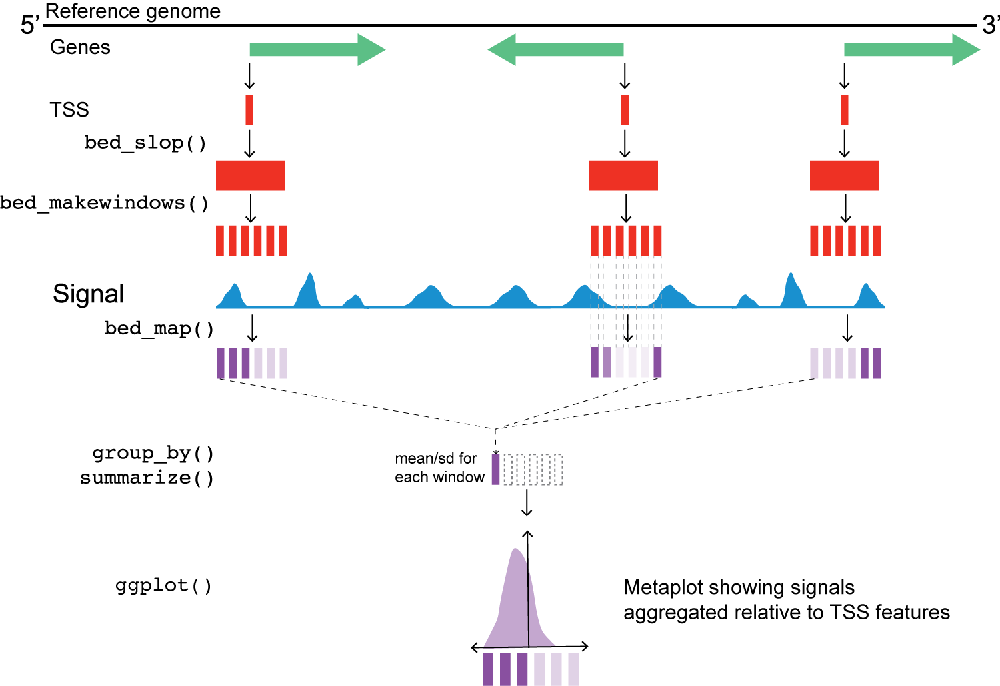

Chromatin accessibility II
Genomewide chromatin analysis with metaplots and heatmaps
Last class we saw what the different methods to profile chromatin accessibility can tell us about general chromatin structure and possible regulation at specific regions in a small portion of a chromosome.
We also want to make sure these conclusions are valid throughout the genome. Since we want to keep the file sizes small, we will ask if they are valid across an entire chromosome.
Load libraries
First we will plot the profiles of all our data sets relative to the transcription start site (TSS), where all the action seems to be happening:
Load data
First, we need to load relevant files:
-
yeast_tss_chrII.bed.gzcontains transcription start sites (TSS) for genes on yeast chromosome 2. -
sacCer3.chrom.sizescontains the sizes of all yeast chromosomes, needed for some of the calculations we’ll do. We’ll grab this from the UCSC download site.
yeast_tss <- read_???(
here("data/block-dna/yeast_tss_chrII.bed.gz")
)
genome <- read_???("https://hgdownload.soe.ucsc.edu/goldenPath/sacCer3/bigZips/sacCer3.chrom.sizes")Load signals
Next we’ll load bigWigs for the ATAC and MNase experiments, containing either short or long fragments.
Recall that the information encoded in short and long fragments should be reflected in our interpretations.
acc_tbl <-
tibble(
file_name = c(
"yeast_mnase_lt50.bw",
"yeast_mnase_134_160.bw",
"yeast_atac_lt120.bw",
"yeast_atac_gt120.bw"
),
sample_type = c(
"MNase_Short", "MNase_Long",
"ATAC_Short", "ATAC_Long"
)
) |>
mutate(
file_path = here("data/block-dna", file_name),
big_wig = purrr::___(
file_path, ~ read_bigwig(.x)
)
) |>
select(sample_type, big_wig)Meta-plots
Setting up regions for a meta-plot
Next, we need to set up some windows for analyzing signal relative to each TSS. This is an important step that will ultimately impact our interpretations.
In genomic meta-plots, you first decide on a window size relevant to the features you are measuring, and then make “windows” around a reference point, spanning some distance both up- and downstream. If the features involve gene features, we also need to take strand into account.
Reference points could be:
- transcription start or end sites
- boundaries of exons and introns
- enhancers
- centromeres and telomeres
The window size should be relevant the reference points, such that small- or large-scale features are emphasized in the plot. Moreover, the window typically spans some distance both up- and downstream of the reference points.
Once the window size has been decided, the next step is to make “sub-windows” around a reference point. If gene features are involved, we also need to take strand into account.
(The state of genome annotation directly influences the quality of the meta-plot or heatmap.)
For small features like transcription factor binding sites (8-20 bp), you might set up smaller windows (maybe 1 bp) at a distance ~20 bp up- and downstream of a reference point.
For larger features like nucleosome positions or chromatin domains, you might set up larger windows (~200 bp) at distances up to ~10 kbp up- and downstream of a set of reference points.
Metaplot workflow

Chromatin accessibility around transcription start sites (TSSs)
region_size_total <- 1500
region_size_half <- region_size_total / 2
win_size <- 10
# need a function that generates a sequence of numbers
win_coords <- ___(
-region_size_half,
region_size_half,
win_size
)Next, we’ll use two valr functions to expand the window of the reference point (bed_slop()) and then break those windows into evenly spaced intervals (bed_makewindows()).
yeast_tss |>
bed_???(genome, both = region_size_half) |>
bed_???(win_size = win_size)At this point, we also address the fact that the TSS data are stranded. Can someone describe what the issue is here, based on the figure above?
This next step uses valr bed_map(), to calculate the total signal for each window by intersecting signals from the bigWig files.
Once we have the values from bed_map(), we can group by win_coord and calculate a summary statistic for each window.
Remember that win_coord is the same relative position for each TSS, so these numbers represent a composite signal a the same position across all TSS.
Meta-plot of signals around TSSs
Finally, let’s plot the data relative to TSS for each of the windows.
n_tss <- length(unique(yeast_tss$name))
ggplot(
tss_meta_tbl,
aes(
x = win_coord,
y = win_mean
)
) +
geom_line(linewidth = 1, color = "red") +
facet_wrap(
~sample_type,
nrow = 2,
scales = "free_y"
) +
theme_minimal_grid() +
theme(
axis.text.x = element_text(
angle = 45,
vjust = 1,
hjust = 1
)
) +
labs(
x = "Position relative to TSS (bp)",
y = "Signal (mean of window sums)",
title = "Chromatin accessibility around transcription start sites",
subtitle = glue("{n_tss} features on S. cerevisiae chrII")
)Interpreting the meta-plots
What is the direction of transcription in these meta-plots?
What are the features of chromatin near TSS measured by these different experimental conditions?
How do you interpret the increased signal of the +1 nucleosome in the “MNase_Long” condition, relative to e.g. -1, +2, +3, etc.?
What are the differences in ATAC and MNase treatments that lead to these distinctive patterns?
Heatmaps
Heatmap of signals around TSSs
To generate a heatmap, we need to reformat our data slightly.
Take a look at acc_tbl and think about how you might reorganize the following way:
- rows contain the data for individual loci (i.e., each TSS)
- columns are ordered positions relative to the TSS (i.e., most upstream to most downstream)
We’re going to plot a heatmap of the “MNase_Long” data. There are two ways to get these data.
mnase_tbl <- acc_tbl[acc_tbl$sample_type == "MNase_Short", ]$tss_win_sum[[1]]Or, using dplyr / tidyr:
Either way, now we need to reformat the data.
mnase_tbl_wide <-
mnase_tbl |>
select(
name,
win_coord,
win_signal
) |>
# this step is important to sort + and - windows correctly
arrange(name, win_coord) |>
replace_na(
list(win_signal = 0)
) |>
pivot_???(
id_cols = name,
names_from = "win_coord",
values_from = "win_signal"
)Once we have the data reformatted, we just convert to a matrix and feed it to ComplexHeatmap::Heatmap().
# drop the name & convert to matrix
mnase_mtx <-
select(mnase_tbl_wide, -name) |>
as.___()
ComplexHeatmap::___(
mnase_mtx,
cluster_columns = FALSE,
show_row_dend = FALSE,
show_column_names = FALSE,
show_heatmap_legend = FALSE
)Interpreting meta-plots and heatmaps
It’s worth considering what meta-plots and heatmaps can and can’t tell you.
What are the similarities and differences between heatmaps and meta-plots?
What types of conclusions can you draw from each type of plot?
What are some features of MNase-seq and ATAC-seq that become more clear when looking across many loci at the same time?
What are some hypotheses you can generate based on these plots?
Assessing the signfiicance of observed patterns.
One approach for assessing the signifcance of a pattern (e.g., the density of nucleosomes around transcription start sites), is to randomize the reference points, and use those to remeasure density. This can be done by generating a random set of TSS like:
n_tss <- length(unique(yeast_tss$name))
bed_random(genome, length = 1, n = n_tss)Given enough random sites, you will be able to vizulaized what a null distribution of overlaps looks like. If you reframe your question around a response variable (i.e., “how many intact nucleosomes are within 500 bp of a TSS?”) then you can calcuate an empirical p-value using the approaches covered in the bootcamp.
Utility of metaplots and heatmaps in practice
There are a few specific cases when you should consider using the metaplot / heatmap strategy.
If you have data from two different conditions (i.e., plus/minus a transcription factor that might change the state of multiple promoters), you could make a metaplot for each of the plus and minus conditions, to see of common patterns manifest. You might also create a heatmap of the conditions, which might reveal smaller groups of affected genes that would be masked by the metaplot aggregation.
The approaches are also useful to compare patterns across types of reference points. For example, you might examine chromatin marks (measured by CUT&TAG) relative to the following: transcription starts, exon starts, exon ends, transcription ends.